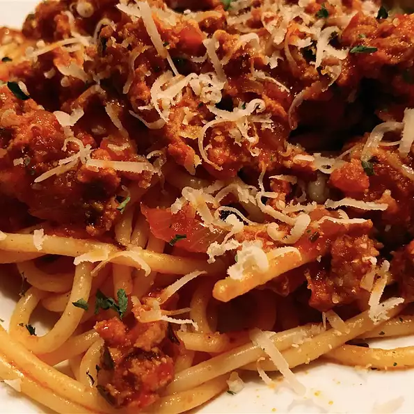

Spaghetti

Description
Whether you are tired from the day's work , or you are preparing a big dinner for your friends, this recipe is simple yet taste to wow anyone
Ingredients
- 1 pound lean ground beef
- 12 ounces spaghetti
- 1 chopped onion
- 1/3 vegetable oil
- 1/2 teaspoon salt
- 1/4 teaspoon ground turmeric
- 2 1/2 teaspoon tomato paste
- 2/3 cup water
Steps
- Heat oil in a medium skillet. Add chopped onions, and cook until tender. Add ground beef, and brown. Stir in salt and turmeric. Dilute tomato paste in water, and add to the beef mixture. Cook for 30 minutes over medium heat.
- Cook spaghetti in a large kettle of boiling salted water according to package directions. Drain well.
- Combine beef mixture and noodles in a large kettle. Cover, and cook over medium heat for 30 to 40 minutes.